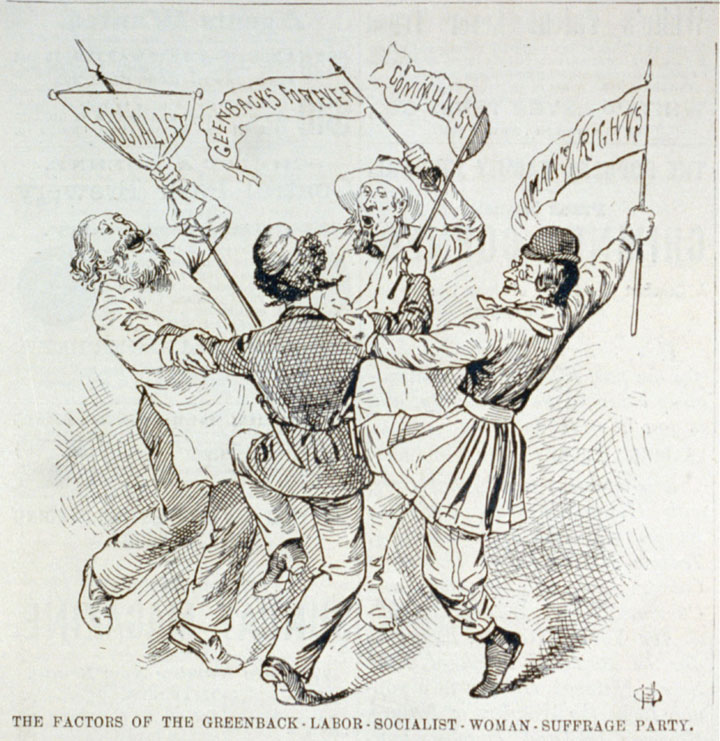
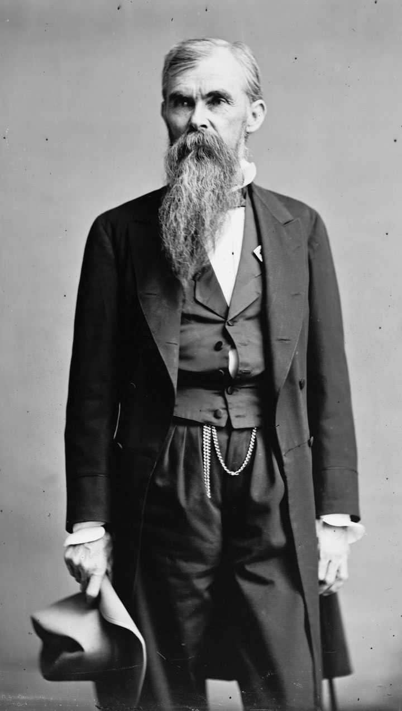
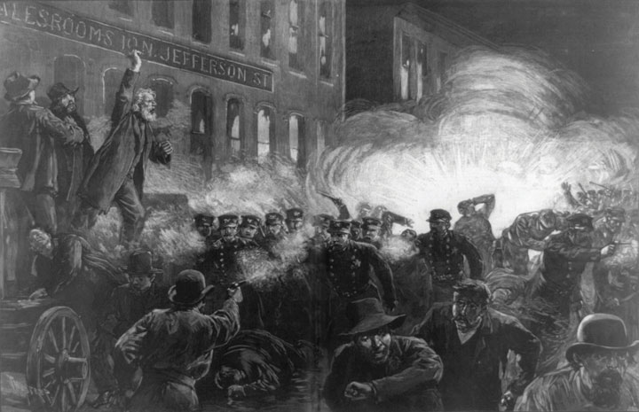

The term Gilded AgeA period of rapid economic growth and expansion between Reconstruction and the turn of the century. The phrase has a negative connotation, as gilded refers to an object that is covered in a superficial layer of gold. was first coined by novelist Mark Twain as an indictment of the era’s greed and corruption. The term itself was a protest against the factors that led to the consolidation of power into the hands of a small coterie of industrialists and politicians. Overreliance on the image of the Gilded Age and its corruption and corporate power may create the false impression that these men (and a few women) dominated life during the late nineteenth century. In reality, half of Americans lived and worked on farms during this era. In addition, at least half of those classified by the US Census as city dwellers lived in towns with only a few thousand residents. Although all Americans were affected by the growth of corporate power, they remained much more independent of national markets and national political parties than any generation that followed. Many historians hesitate to use the label Gilded Age because it may create the false assumption that corruption typified the era. Perhaps more importantly, simple labels deny the complexity of an era that saw personal standards of living expand alongside the growth of industry. The Gilded Age was host to corruption but also grassroots protest against corruption. It saw the expansion of corporate power but also the expansion of democracy for hundreds of thousands of women.
National politics entered a phase of relative equilibrium following Reconstruction. Both parties had roughly equivalent electoral strength on a national level. However, within a particular region and state, one or the other party was usually so dominant that the concerns of voters could be neglected without immediate consequences at the polls. Presidential elections during this time were close, yet stale and predictable as the South supported the Democratic candidate, while the West and North tended to vote Republican. Rutherford B. Hayes remained tainted by the Compromise of 1877 and was despised by many workers for his unprecedented use of military power to curtail the labor strikes later that year. Hayes wisely decided against running for reelection in 1880. Republican James A. Garfield defeated Democrat Winfield Hancock, an election that was already decided by the political affiliation of each state and the Electoral College system, even though the popular vote was extremely close. Garfield swept New England, the Midwest, and most of the West. Although Hancock won California, this state was not yet populous enough to swing the election, and the Democrats struggled to win more than a few states beyond the South. The major difference between the two parties was that the Republicans supported slightly higher tariffs.
Figure 2.27

An artist’s rendition of the Garfield assassination. The president was shot at a train depot in Washington, DC. He was on his way to Williams College, the president’s alma mater, to deliver a speech.
Leading political figures often spoke out against the dangers of the patronage system. However, it was not until the assassination of President James Garfield in July 1881 that significant measures were taken to reform the way government jobs were distributed. Garfield was killed by a deranged man who was apparently disappointed that the president had not returned his letters or appointed him to an important diplomatic post. The assassination led journalists to investigate the many cases were individuals had received government jobs they were not qualified for simply because they had political connections. These investigations revealed shocking nepotism within political machines, even evidence of graft in the newspapers themselves. For example, office seekers openly advertised their willingness to “kick back” portions of their salary to any political party or politician that could secure them a job.
Garfield’s replacement, Chester A. Arthur, had only been nominated as vice president because of his connections to political machines. In response, Congress passed the Pendleton Civil Service ActA law passed in 1883 that established the Civil Service Commission, a federal agency that administers competitive examinations for those seeking certain government jobs.. Arthur had little choice but to support the new law, which introduced modest reforms. The Pendleton Act prohibited federal officeholders from making contributions to the politicians who had appointed them. In addition, it established the Civil Service Commission. This federal agency administered competitive examinations for those seeking certain government jobs. Most bureaucrats were still appointed rather than selected for merit during the 1880s, and only a small percentage of federal jobs required applicants to pass any examination. However, the Civil Service Commission would expand and influence similar reform in states and cities.
Chester Arthur hoped to win election in his own right in 1884. However, despite his support for the Pendleton Act, he remained associated with the political machines that secured his original nomination to the vice-presidency. With the support of some Republicans who refused to support Arthur, former Buffalo mayor and Democratic candidate Grover Cleveland prevailed in 1884. The tariff remained the prevailing issue of the election, with more Americans favoring the reduction of these taxes due to the growing surplus of the federal treasury. Government spending remained low enough that even without federal income taxes, the loans made during the Civil War could be repaid through tariffs with money left over. Cleveland recommended reducing the tariff, which won the support of the South as well as many others who hoped to start exporting US goods.
While in office, Cleveland deferred to Congress and the states. He believed in limited federal power and hoped to reconcile the continuing cultural divide between the South and the North. The president cited these doctrines and goals in defense of his decision to not intervene in the South, even when a growing number of black men were lynched for attempting to vote, start businesses, or simply refused to abide by new laws mandating racial segregation. Cleveland was much more responsive to the petitions of farmers who felt that they were being crushed by the monopolistic practices of railroads. The president approved the Interstate Commerce Act, which provided limited federal regulation of railroads.
In 1888, Cleveland was defeated by Republican Benjamin Harrison. As President, Harrison raised tariffs even higher in hopes of protecting Northern industry. However, Cleveland would return to the White House four years later, defeating Harrison in 1892. The three presidential elections between 1880 and 1888 were incredibly close contests. The popular vote between the Republican and Democratic candidate in each of these elections was so close that less than 1 percent of the nation’s voters preferred one candidate over the other. In 1892, the most important development was not Cleveland’s slightly larger margin of victory, but the emergence of a third political party that introduced measures that were much more compelling to most voters than the tariff. In the years leading up to this election, urban and rural reformers practiced a form of activism at the local level that demonstrates that the vitality of local politics during the Gilded Age.
Figure 2.28
Opponents of the Greenbackers attempted to discredit their economic ideas by associating them with political movements that were considered foreign and radical. Here, a Greenbacker embraces supporters of the Socialist and Communist movements. Also pictured is a cross-dressing man holding the banner of women’s suffrage.
Elections in nineteenth-century America were ripe with corruption, ranging from the free flow of whiskey provided by political parties to outright bribery, fraud, and intimidation of voters. Ballots were printed in advance and distributed to voters who were often pressured by their employers or landlords to vote for a certain candidate. These preprinted ballots did not provide voters the option of “splitting the ticket” by voting for candidates of various political parties. Even worse, these ballots were often printed on colored paper, making it obvious to the dozens of men standing around the ballot box who voted for what party in an era where the secret ballot was unheard of and community members knew everyone by name. Political machines emerged in America’s cities and controlled elections by offering small bribes to the impoverished voters of working-class and immigrant neighborhoods. They also formed alliances with business and some labor leaders. These alliances allowed the lieutenants of the machine to reward loyal voters with jobs while providing their larger donors in industry with government contracts. Neighborhood political leaders affiliated with the machine also used some of the money to provide needed social services. As a result, many of the working class viewed the machine politicians as modern-day Robin Hoods and their only friends in politics.
Others turned to monetary policy as a method of redress. The Greenback PartyA short-lived third-party movement that sought to increase the amount of money in circulation by having the government print legal currency that was not tied to the nation’s gold reserves. This action would cause inflation, something that would aid farmers who were usually in debt and struggling with declining crop prices. emerged during the 1870s and attracted a million voters for its various candidates by 1878. As the name suggests, the Greenbackers promoted the creation of a national currency that was not backed by gold. Greenbackers were usually farmers who were deeply in debt or aspiring entrepreneurs who had been prevented from borrowing money because of the limited money supply tied to gold. Greenbackers recognized that if the government abandoned the gold standard or otherwise created more money, inflation and higher prices/wages would be the result. This prospect terrified those with money in the bank, but for those in debt, inflation would help their situation considerably. Farm prices and wages would increase to keep up with the cost of living, yet the amount owed to a bank would remain the same and actually be much easier to pay back.
When the Greenbackers succeeded in electing over a dozen congressmen in the 1878 election, creditors and the wealthy responded with a broad attack at any attempt to abandon the gold standard as a dangerous Communist plot. While much of the rhetoric was clearly intended to derail discussion of the Greenbackers’ ideas, moderates reminded voters that a currency backed by gold was an international standard of most developed nations and the only guarantee of that currency’s value. Most Americans agreed that experimenting with fiat currency was a risk they could not afford in a time of peace. However, the ideas of the Greenbackers lasted long after their party disintegrated in the early 1880s.
Despite the near monopoly of Southern Democrats, some of the most interesting and progressive political ideas originated from the South and its various local political groups loosely connected to the National Grange of the Patrons of HusbandryKnown simply as the Grange and composed of local chapters that served as both a social and fraternal organization for farmers. The Grange grew rapidly during the late nineteenth century, and many Grange leaders began turning toward politics to address the concerns of their members.. Known as the Grange, the organization grew quickly from isolated chapters of isolated farmers looking for social connections and a measure of economic cooperative activity. Members soon included educational and political events among harvest festivals and other social events. They also began to work collectively to promote their mutual self-interest as farmers, pooling their resources to purchase a tractor or harvester that none could afford on his own. The Grange also sought to pool their resources to purchase grain elevators, start cooperative stores, and even sponsored lawsuits against monopolistic railroads.
The Grange was most successful as a local organization, although its national representatives also secured legislation on behalf of its members. For example, they secured federal regulation of grain elevators they believed were acting as monopolies and charging exorbitant rates. After railroads and grain elevators challenged the legality of government regulation, the Grange even won a Supreme Court decision that was favorable to its members. In 1877, the court ruled in Munn v. Illinois that privately owned grain elevators were operated in the public interest much like utility companies and were therefore subject to government regulation. By the 1890s, most local Granges and the local third parties that were loosely affiliated with the Grange had declined or merged with other groups. Like the Greenbackers, the ideas of the Grangers about collective action and politics would live on and inspire a national movement.
The most successful third-party movement of the early 1880s emerged in Virginia. Like most former Confederate states, Virginia’s state government was saddled with enormous debt. A former Confederate general named William Mahone sought to unite poor whites and poor blacks together against the planter elite who still dominated state politics. These elites were known as BourbonsThe name given to aristocratic leaders of the South. The name comes from a similar label that was given to the large landlords of France that kept their workers in a state of economic servitude. throughout the South by their opponents. The name was a reference to the European aristocracy that dominated France in spite of the will of the agricultural workers and artisans who led to popular revolts and beheadings every other generation. Believing the American Bourbons of the South controlled the Democratic Party, Virginians of diverse backgrounds rallied behind Mahone and a slate of candidates known as ReadjustersProgressive reformers in Virginia and other areas of the South that sought to challenge the rule of elite landowners. The name given to these reformers reflects their desire to “reduce” the state debt and “adjust” the amount of money that went toward services such as education..
Figure 2.29

An 1873 promotional poster for the National Grange. Notice the incorporation of various scenes depicting the cooperation of neighbors, harmonious family life, and the bountiful harvest provided by the Grange member.
Figure 2.30
William Mahone of Virginia was a former Confederate general who led the Readjusters against what they believed was Bourbon domination. These reformers hoped to challenge the role of the Southern elite, reduce government debt, and provide more funds for public education.
In 1879, the Readjusters won control of the state legislature and initiated their plan to “reduce” the state debt and “adjust” the amount of money that went to meaningful government services such as education. Faced with a popular challenge that temporarily united white and black voters behind a Progressive vision of economic reform, the Bourbons fought back by exploiting the long-standing prejudice of race. The affiliation of the Readjusters with local and national Republicans provided all the evidence white voters needed to substantiate allegations that the goal of the Readjusters was to return the state to the “bayonet rule” of federal troops during Reconstruction. The racial and regional loyalty of white voters who voted alongside blacks and Northerners was equated with the highest dishonor on the white race. The Readjusters were voted out of office by 1883, and their goals of separate but relatively equal funding for education and the elimination of poll taxes that kept poor people of all races from voting were defeated.
Labor divided along the lines of specific trades at this time, forming unions within each trade in the hopes of higher wages and better working conditions. Just as the Southerners who sought to challenge the power structure faced enormous obstacles, urban workers in the North and West sought to challenge the dominant power structure. In so doing, they faced dire consequences if they failed. Urban workers participating in union organization might be blacklistedOccurs when one’s name is circulated among employers who maintain a list of individuals who are not to be given a job. The purpose of the blacklist was to isolate labor activists and prevent them from getting jobs where they might encourage other workers to organize.—a practice where employers maintained and shared “do not hire” lists of suspected labor organizers with one another. A few underground labor organizations such as the Knights of LaborA leading labor union during the 1880s, the Knights advocated worker solidarity and believed that labor (workers), rather than capital (financiers and corporations), were the source of economic development. As a result, this union, which included women and minorities, advocated a greater share of profits and control over factories for workers. emerged as a secret worker’s fraternity with utopian goals. The Knights believed in a radical reordering of the economic system with factories being collectively owned and controlled by the workers. In some ways, this was a similar vision offered by those who had advocated collective land redistribution to former slaves following the Civil War. However, like radical ideas about land, the Knights won few converts to their philosophy of collective ownership of factories, although their membership increased in the years that followed.
The Knights attracted a small but devout following in their early years. By 1879, there were 10,000 members when Scranton, Pennsylvania, mayor Terrance Powderly was also selected to lead the Knights. Membership grew exponentially to 700,000 members following a successful strike by some members of the Knights in 1886. About 10 percent of members were women and African Americans—something that made the Knights very unique at this time but also aroused opposition among other labor movements. Ironically, the philosophy of the Knights of Labor was not one based on winning tactical goals such as raises, but rather on mobilizing politically in hopes of winning support for their more radical goals of eliminating child labor, minimum wages and maximum hours, and eventually collective ownership.
Leaders of various trade unions—the kinds of organizations that represented skilled laborers within a specific craft rather than the general laborers the Knights sought to organize—declared a national work stoppage for May 1, 1886. May 1 would soon be known as Labor Day and become an international day of worker solidarity. In the meantime, tens of thousands of workers in various leading cities who were affiliated with various trade unions walked off their jobs to demonstrate the power of workers over management. Most returned the next day, but in Chicago, tensions were already high because of a long-standing disagreement and strike at the McCormick Harvester. Although Powderly believed the strike was a mistake, his union had grown far beyond his control, and some laborers affiliated with the Knights participated in this and other strikes throughout the city. McCormick hired strikebreakers, a practice that had led to small-scale violence between union workers and the new employees who were replacing them. On May 3, the two groups clashed and the police opened fire on the crowd, killing four workers.
Figure 2.31
A contemporary image of the Haymarket Affair depicting the police as being attacked directly by anarchists. Harper’s Weekly was a leading publication and chose to refer to the event as “The Anarchist Riot.” This interpretation typified the view of most newspapers at this time.
The following day, thousands of Chicagoans gathered at the city’s Haymarket Square to protest police violence and the intimidation of union workers. An unknown party set off a bomb that injured many in the crowd and killed several policemen. Once again the police fired into the crowd, allegedly in response to armed anarchists who sought to destroy the Capitalist system. Eight known anarchists present that day were arrested, and four were executed with little evidence to connect them to the violence. Most newspapers referred to the event as the Haymarket Riot, emphasizing the lawlessness of many in the crowd whose behavior made an otherwise peaceful labor protest turn violent. Others labeled May 4, 1886, as the Haymarket Massacre, emphasizing the deaths of at least a dozen bystanders and police, most of whom were killed by the undisciplined fire of their fellow officers. Because of the radicalism of some leaders present during the Haymarket AffairOccurred on May 4, 1886, in Chicago’s Haymarket Square. At least a dozen participants in a labor demonstration were shot after a bomb exploded among protestors and police. The event polarized Americans, with those who opposed labor activism blaming the demonstrators and union leaders citing the event as evidence that the police only served the interests of large firms., radical labor unions such as the Knights of Labor were connected to the violence in the public mind. May 1 would not be celebrated in the United States, as it was in the rest of the world, because government officials viewed labor activism with suspicion. Membership in the Knights and other unions dropped and many Americans began to connect the labor movement to anarchists and Communists who advocated any method to destroy the Capitalist system.
More typical of the labor movement during the 1870s and 1880s was the National Labor UnionA national federation of trade unions founded in 1866 in hopes of promoting arbitration, a new political party based on the interest of laborers, and limiting the working day to eight hours. (NLU) whose members hoped the government would use its expanding power to arbitrate disputes between workers and management. Many viewed the establishment of a law limiting the workday to eight hours as a panacea—an instant cure for all problems. Perhaps as many as 700,000 laborers joined the NLU in support of the eight-hour day, believing that a reduction from the ten- to fourteen-hour workdays they experienced would improve the quality of their lives while also requiring employers to hire more workers. In the end, only the federal government established eight hours as the standard for its employees during this period, many of whom faced pay cuts in return for the reduction in hours.
Figure 2.32

This cartoon was obviously created by an opponent of organized labor. However, it reveals one of the leading obstacles faced by union organizers. Here, a workingman bypasses the bank and deposits his earnings into the coffers of “The Workingmen’s Association.” The cartoon plays on images of gender as the artist presents the man as a poor provider. His wife holds an empty shopping basket while his son wears tattered clothing.
Most workers in America did not join the NLU or the Knights of Labor due to the costs of union membership and the potential repercussions by employers. America’s reluctance to embrace working-class solidarity was also cultural. America’s heritage of independent family farms was different from other nations where peasants worked on farms owned by nobility. Nineteenth-century Americans were fiercely independent and often viewed unions with suspicion because they believed that workers and management shared a mutual heritage and self-interest. Many believed that working for wages was a temporary step on their way to starting their own farm or business and eventually hiring workers themselves. As a result, workers in a factory considered themselves future farmers or shopkeepers and were less likely to develop collective identities as brothers and sisters of labor. The idea of American ExceptionalismThe belief that the United States is completely unique from other nations. The idea can be taken to the point of believing that the study of other nations and people are of little value to understanding US history.—the belief that America is unique from all other nations—created a faith that America was a land of economic opportunity unlike any other nation. Both native-born and immigrant laborers subscribed to this idea to different degrees, either as their birthright or as a rite of passage for surviving the arduous Atlantic or Pacific crossing. If one could not rise from poverty to wealth in America, then America was not that different from other nations where fortunes were inherited and seldom earned.
As a result, membership in a group such as the Knights of Labor would have represented a fundamental shift in ideology from believing one could rise from laborer to owner through character and hard work to resigning oneself to a life working for others. If life as a wage laborer was a temporary way station on the road to economic independence, many Americans wondered, why waste one’s time and money on behalf of a worker’s union? If collectivism was already a foreign concept for many US workers with entrepreneurial ambitions, their suspicion was heightened by world events when French Communards seized property in Paris in the spring of 1871. In contrast to the Old World represented by European workers who sought radical changes to the economic system, most US workers bought into the free labor ideologyThe belief that Northern progress was based on the freedom of workers to choose their occupations and employers and profit from their labor. Following the end of slavery, this idea evolved into the belief that workers’ freedom to choose their employer was a natural source of protection from potentially unscrupulous employers.. As free women and men, laborers would choose to work for employers that treated them fairly. The free market regulated both products and producers, they believed, so it was in the best interest of business owners to produce quality merchandise and satisfied workers. The most ambitious members of the working class who might have become labor leaders were even more likely to reject theories about collectivism and redistribution of wealth; their ambition fueling their hunger to become members of the upper classes themselves.
American Exceptionalism appeared naive to some, yet for thousands of Americans, the journey from the bottom to the boardroom was more than some fantasy—it was a history that surrounded them and repeated itself with regularity. Authors such as Horatio Alger capitalized on the very real phenomenon of upward mobility and America’s faith in it by authoring popular serial novels that told of young men rising from humble origins. Many of America’s wealthiest families had risen from poverty to affluence, each time proving to many that America was different from other countries where it seemed that one was either born wealthy or poor. Ironically for many of the self-made, success simply hardened them to those who were not as fortunate. America during the 1880s was home to the beginning of gentrification as the wealthy lived increasingly insulated lives. They moved away from the city core so they would not have to live among the poor who were relegated to tenements near factories and wharves. New York City expanded to over one million souls by 1880, most of whom lived in increasingly crowded buildings originally designed for a fraction of their current occupants. These neighborhoods were naturally home to higher rates of crime and lower standards of sanitation, factors that helped to reinforce existing prejudices against poor immigrants as unclean and prone to vice.
American Exceptionalism and the nation’s suspicion of radicalism resulted in a much narrower range of political reactions to the growth of corporations. Most reformers accepted the basic structure of Capitalism and simply sought to use the power of the government to regulate the free market in the public interest. Over time, it appeared that only the federal government was powerful enough to counter the power of corporate barons who operated in multiple cities and states. These women and men feared that if the government failed to regulate these industries, an oligarchy would soon emerge where power was vested in the hands of a few powerful business leaders. Most Americans retained their suspicion of government during these years, but a growing number began to incorporate a more powerful and active government in their definition of freedom. By the 1890s, their ideas about the role of the federal government began to attract significant attention.
Elizabeth Cady Stanton proudly exclaimed in 1878 that the arguments she and other suffragists had made over the last three decades had yet to be defeated by any man in debate. Yet just as opponents of black freedom avoided discussion with black leaders, opponents of women’s suffrage had no intention to take chances in the free marketplace of ideas. The most common and most potent argument against black freedom was violence and race-baiting, while the opponents of women’s suffrage launched personal attacks against the character and moral purity of suffragists. Rather than debate whether women could overcome their lack of practical experience in public affairs or whether the time required for such activities would jeopardize their role as mothers—real concerns among many Americans—opponents leveled barrages of insults at suffragists and those who supported them. Most men went to extraordinary lengths to prove their masculinity, and the self-identity of women in the nineteenth century was equally tied to notions of gender. As a result, when suffragists were labeled as unfeminine and accused of abandoning their children, most women naturally sought to distance themselves from the movement. Even those willing to bear the indignity of being shunned by their community also had to consider that their husbands would be ridiculed or even fired from jobs if they persisted in the suffrage movement. A man who was incapable of commanding the proper behavior of his wife, many believed, could certainly not be expected to maintain discipline among men in the workplace.
Figure 2.33

Antisuffrage propaganda depicted women’s suffrage as a radical doctrine that would lead to negative consequences. This 1880 cartoon features eight caricatures such as women driving ugly women from the polls, dressing as men and drinking in public, and voting for a handsome demagogue.
As a result, the women’s suffrage movement was placed on the defensive in ways that reflected the obstacles the early abolitionist movement faced. Like the abolitionists who divided on whether to seek gradual laws encouraging manumission or to devote all efforts to the total destruction of slavery, early suffragists divided about whether they should focus strictly on suffrage or conduct a broad campaign against gender discrimination in all its varieties. The American Women’s Suffrage Association (AWSA) continued to be more conservative, and its members hoped to work with male leaders who could pass women’s suffrage laws at the local and state level. This approach had led to a handful of localities approving women’s suffrage in school elections even prior to the Civil War. In these cases, women used the era’s notion of women’s “proper sphere” being the home. If women were responsible for the children, they argued, shouldn’t they naturally have a voice in the operation of schools? Similar arguments led to the extension of suffrage in city elections as women needed a voice in community government if they were to be guardians of the home. Women even won the right to vote in Western states such as Wyoming and Utah in 1869 and 1870, respectively. While the AWSA as an organization cannot be credited alone for these victories, their more conservative strategy led to dozens of successful suffrage campaigns throughout the nineteenth century.
Thanks to the efforts of Lucretia Mott and other women who sought to heal the divide between the AWSA and the National Women’s Suffrage Association (NWSA), these two organizations frequently worked together. The NWSA continued to be more radical, however, taking on controversial measures such as women’s property rights, divorce laws, contraception, and even the very notion of whether marriage and motherhood was the highest station a woman could achieve. Stockbroker and editor Victoria WoodhullA leader of the early women’s suffrage movement, Victoria Woodhull subscribed to the idea that suffrage was a right possessed by all American citizens regardless of gender. She confronted the sexual double standard of Victorian America, published a newspaper, worked in the investment industry, and even ran for president of the United States. was even more radical than most members of the NWSA. Woodhull exposed one of the long-standing taboos in US culture—the sexual double standard between women and men. If a single woman chose to engage in sexual relationships with one or even multiple partners, Woodhull argued, she should not be castigated for her choice any more than a bachelor might be.
Rev. Henry Ward Beecher was the most prominent American clergymen at this time. Beecher attacked Woodhull, questioning her integrity and likening the outspoken women’s leader to a jezebel. This Biblical caricature assaulted Woodhull’s virtue, but it also spread her ideas given Beecher’s celebrity-like notoriety. Woodhull did not back down from Beecher’s accusations. Instead, she published a report exposing an extramarital affair between the reverend and the wife of one of his leading parishioners. Ironically, the scandal that followed validated Woodhull’s ideas about America’s sexual double standard. The well-connected Beecher suffered no consequences, but his mistress was excommunicated from the church. Although she was not permitted to vote and therefore was presumably barred from holding public office, Woodhull ran for president of the United States in 1872. She chose Frederick Douglass for her running mate. The image of a white woman and black man campaigning together would have surely created a scandal. However, Douglass was touring internationally at this time and likely never knew about the nomination.
Few women even within the NWSA endorsed Woodhull’s candidacy or methods. They did, however, subscribe to her more radical perspective that women were equal to men and therefore already possessed equal rights. By the early 1870s, NWSA leaders pursued a strategy called “the New DepartureAn ideology espoused by some of the more radical suffragettes of the 1870s that suggested that because women were citizens they already possessed the right to vote and were entitled to equal protection of this right under the Fourteenth Amendment.,” which was a philosophy of equal rights grounded in the idea that all citizens possessed the right to vote. If voting was a right of citizenship and there were no laws specifically taking that right away from citizens because of gender, followers of the New Departure believed, then no special laws enfranchising women were needed. Others pointed out that the Fourteenth Amendment granted the rights of citizenship to women and added to this their belief that citizens in a democracy automatically possessed the right to vote. These women studied state and federal constitutions and local election laws. They also became experts in history and political theory, often emphasizing that their republic was formed in protest of taxation without representation. Armed with books of law and a cache of tax receipts, hundreds of NWSA members registered to vote—or at least attempted to do so.
Figure 2.34

Victoria Woodhull was one of the most interesting people in the late nineteenth century. Stockbroker, author, editor, presidential candidate, and radical women’s rights advocate, Woodhull defied convention and usually got the better of any man or woman who debated her.
Sojourner Truth and Mary Ann Shadd Cary followed the New Departure all the way to the polls where they were turned away like hundreds of other suffragists around the country. Susan B. Anthony arrived at the polls and demonstrated to bewildered registrars that there were no laws barring women from voting in her home of Rochester. Although permitted to cast her vote, the vote was later disqualified and a warrant was made for her arrest. Speaking to a group of supporters at a NWSA meeting years later, Anthony described the peculiarities of her arrest and how the experience reflected the way her actions and the resulting police action against a middle-class white woman violated the conventions of race, social class, and gender in nineteenth-century America. The arresting officer arrived at her home, Anthony recalled, nervously made small talk, and eventually notified her that she was to be arrested. “Is that the way you arrest men?” she asked the officer. After he sheepishly admitted it was not, Anthony demanded that she be arrested “properly” and presented her wrists to be handcuffed. The officer refused and instead of restraining Anthony and taking her to jail, he pulled out his pocketbook and arranged for a carriage to deliver the lady outlaw to the police department.
The trial was equally tense as Anthony’s notoriety spread the news of the court’s proceedings. The state ruled that citizenship was not a guarantee of suffrage and that even if women were not explicitly excluded by laws regarding suffrage, they did not have the right to vote. Anthony refused to pay her $100 fine, and the police wisely chose not to send another officer to her home to arrest her for nonpayment. The following year, the House of Representatives debated women’s suffrage and Missouri’s Virginia Minor took her lawsuit against the registrar who had disqualified her vote all the way to the United States Supreme Court. Minor echoed decades of women’s rights advocates as she likened suffragists to the nation’s founders who confronted taxation without representation. She also challenged the court to consider the arguments of feminist thinkers and the New Departure. In the end, the case of Minor v. Happersett mirrored the decision against Anthony as the Supreme Court ruled that voting was not an inherent right of citizenship. Despite the ruling, the publicity both women received and the debate they inspired challenged many to reconsider their assumptions about gender and democracy.